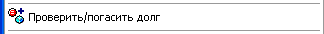
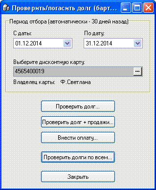
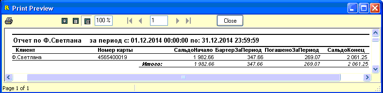
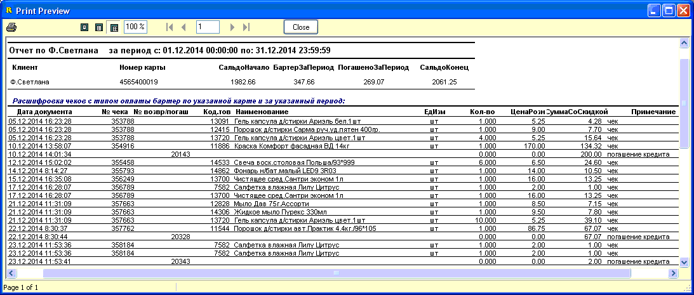
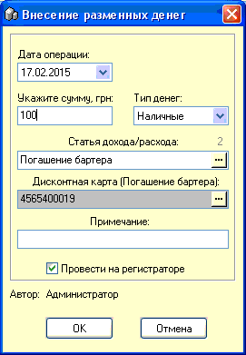

- Во многих магазинах, особенно
небольших, распространена практика отпуска товаров в долг. Впоследствии
должник погашает задолженность частями, причем такие оплаты обычно не
совпадают по суммам с суммами конкретных покупок, что дополнительно
усложняет учет. Кроме того, часто руководство магазина может разрешать
персоналу магазина брать товар в долг, учитывая это при начислении зарплаты на
руки (как в по рознице, так и по закупке, см.раздел справки
"Взаиморасчеты с сотрудниками" и "Справочники/Сотрудники")
- В программном обеспечении SuperMarket этот вопрос
решен и создана автоматическая система определения суммы задолженности и
внесения оплат. Это решение основано на картах покупателя или дисконтных
картах, которые выдаются клиентам и/или сотрудникам магазина. Причем карта
может быть и дисконтной и такой, по которой берут в долг. При этом, можно
настроить программу так, чтобы при взятии товара в долг скидка не начислялась,
а использовалась только при оплате товара сразу (см.раздел справки
"Сервис/Настройки/вкладка Скидки и Скидки 2"). Включается возможность работы с
должниками и погашением задолженности в чеке на вкладке "Чек" в настройках
программы.
- За отпуск товара в долг отвечает форма
оплаты чека "Бартер". Если карта предназначена только для отпуска товара
в долг, то можно в свойствах такой дисконтной карты выставить такую форму
оплаты и она будет автоматически подставлятся в чек при сканировании такой
карты для закрытия чека (см.предыдущий раздел справки "Скидка,
Сохранение, Печать чека"). Более того, можно запретить кассиру сменять этот
тип оплаты (вкладка "Чек" в настройках программы).
- В главном меню чека есть такой пункт:
- 
- При нажатии на него появляется специальное окно
"Проверить/погазить долг (бартер)", рассмотрим ее функционал
подробнее:
- 
- Период отбора - по умолчанию при открытии формы
"По дату" выставляется текущая дата, а в "С даты" выставляется минус 30 дней
назад. Это не значит, что часть задолженности будет упущена, это лишь
указывает за какой диапазон дат подробно расписывать долги/погашения по
клиенту/клиентам в отчетах, которые мы сейчас опишем ниже.
- Выберите дисконтную карту - нажмите троеточие и
выберите карту двойным кликом из справочника или просто просканируйте карту
клиента/сотрудника, чтобы занести номер карты в это окошко.
- Проверить долг... - выводит на предварительный
просмотр печати отчет по выбранному клиенту, пример на рисунке:
- 
- Проверить долг + продажи... - выводит на
предварительный просмотр печати отчет по выбранному клиенту, пример на
рисунке:
- 
- Внести оплату... - открывает форму внесения денег
в кассу (знакомую нам по меню главной формы программы
"Оборудование/Нефискальный принтер"), в которой можно указать сумму погашения,
распечатать для клиента/сотрудника подтверждающий документ, создать запись в
журнале внесений/инкассаций. В этом окне укажите сумму, выберите статью
дохода/расхода (она должна обязательно называться "Погашение бартера") и
просканируйте или выберите карту клиента/сотрудника в соответствующем окошке,
нажмите ОК.
 Внимание! При выборе другого типа оплаты,
чем "Наличные" (например, клиент хочет погазить задолженность банковской
картой), флажек "Провести на регистраторе" автоматически снимается и
стает неактивным, т.к. фискальный регистратор не может делать внесения другим
типом денег, кроме наличных.
Внимание! При выборе другого типа оплаты,
чем "Наличные" (например, клиент хочет погазить задолженность банковской
картой), флажек "Провести на регистраторе" автоматически снимается и
стает неактивным, т.к. фискальный регистратор не может делать внесения другим
типом денег, кроме наличных.- 
- Проверить долги по всем... - выводит отчет
аналогичный отчету по кнопке "Проверить долг...", только для всех
клиентов/сотрудников по чекам с формой оплаты "бартер".